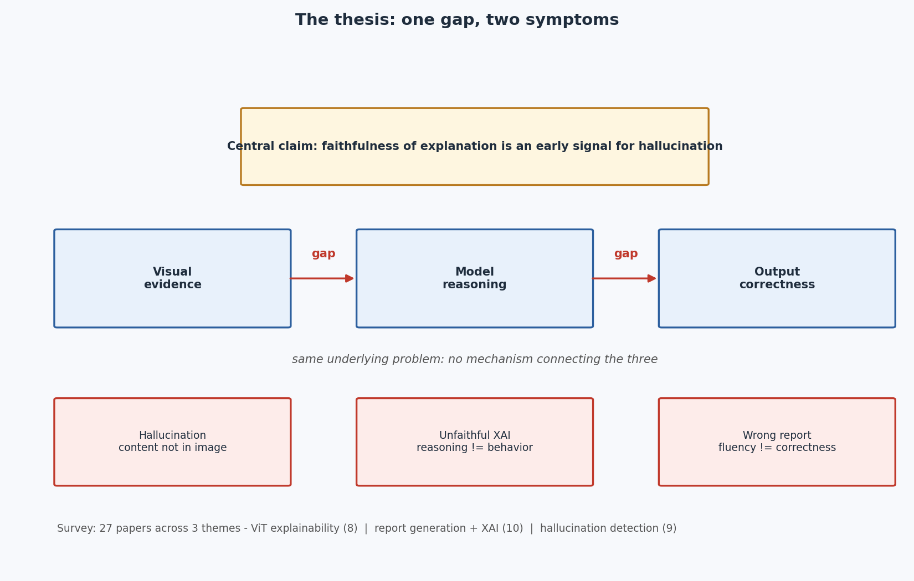

Faithful XAI for Medical Image Report Generation
A survey arguing that hallucination and unfaithful explainability are two symptoms of one gap: nothing connects visual evidence, model reasoning, and output correctness. Its central claim is that the faithfulness of an explanation can serve as an early signal for hallucination, pointing toward evaluation of individual clinical statements, each linked back to image evidence.
110papers collected
27analyzed in depth
3themes
